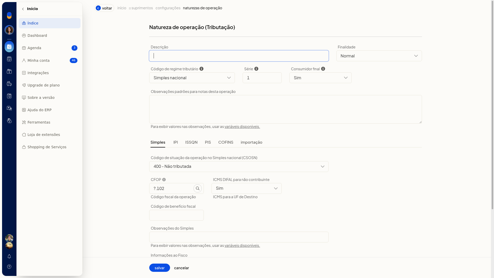
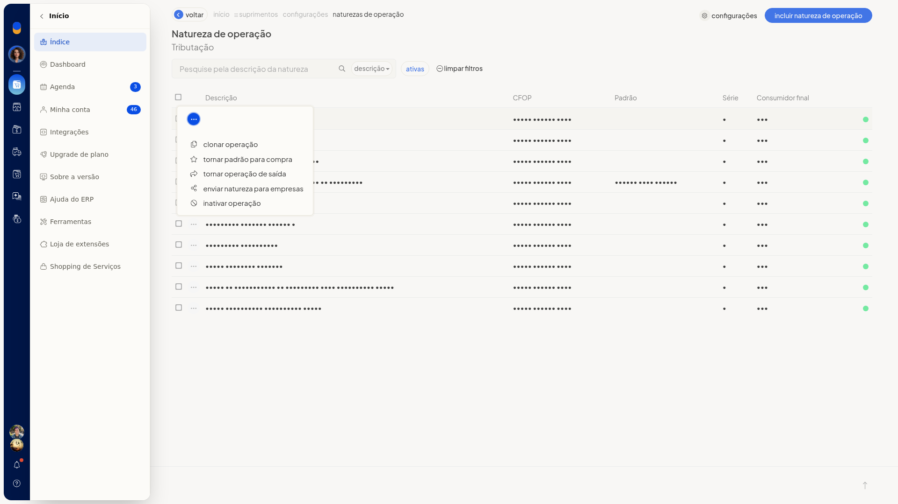

Transformar uma natureza de entrada em operação de saída
No ERP da Olist, a natureza de operação de entrada define como o sistema trata a tributação, o CFOP, o estoque e o preço das notas fiscais de compra. Na lista dessas naturezas, você transforma uma natureza de entrada em operação de saída pela ação da linha.
Pré-requisitos
- Para abrir a tela, a empresa precisa ter NF-e, notas fiscais, nota de entrada ou NFC-e.
- A natureza de saída exige que a empresa tenha NF-e, notas fiscais ou nota de entrada.
- Se a opção não aparecer para você, peça acesso ao administrador da conta.
Instruções
-
Acesse Configurações > Configurações ERP.
-
Na aba Notas Fiscais, abra Naturezas de operação de entrada (tributação).
-
Localize a natureza na lista. Se precisar, pesquise pela descrição, filtre as ativas ou clique em limpar filtros. A grade mostra Descrição, CFOP, Padrão, Série e Consumidor final.


-
Na linha da natureza, clique em tornar operação de saída.
